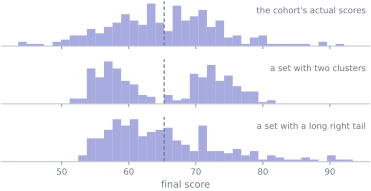
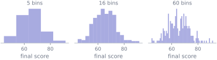
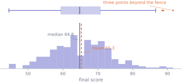

2. Describing one variable
Statistics · Unit 2
Why this unit is here
You have a column of numbers and one sentence in which to describe it. Whatever you put in that sentence decides what your reader notices — and what they never find out.
This is also the foundation floor. The confidence intervals, tests and regression models you will meet first are all built out of a mean and a standard deviation, so the places where those two numbers mislead are the places where everything built on top of them misleads too. Knowing what a summary hides is the difference between using these tools and being used by them.
2.1 Before you start
You should be able to:
- say what a variable is and what one row of a table represents — S1;
- tell a quantitative variable from a categorical one — S1;
- work out an average by hand.
Quick check. Six values: 4, 8, 8, 9, 12, 100. What is the mean, and what is the median?
TipShow the answer
The mean is \(141/6 = 23.5\). The median is the average of the two middle values once sorted, \((8 + 9)/2 = 8.5\).
They disagree by a factor of nearly three, and neither is wrong. Five of the six values are below the mean. That gap — and what it is telling you — is most of this unit.
2.2 The idea
Describing one variable comes down to three questions, in this order:
- Where is it? A typical value.
- How spread out is it? How far from typical a value usually falls.
- What shape is it? Symmetric or lopsided, one peak or several, with or without stragglers.
Most people answer the first, occasionally the second, and skip the third. That is a mistake, and the following picture is why.
Every summary is a compression, and compression throws things away. The skill is knowing what each one throws away, so that you can choose a summary that keeps the part that matters and can say what you have lost.
2.3 The mechanics
Where is it?
Three answers, and they answer slightly different questions.
The mean is the balance point: \[ \bar{x} = \frac{1}{n}\sum_{i=1}^{n} x_i . \]
(If \(\sum\) is unfamiliar notation, M1 unpacks it. It says “add these up”.) The mean uses every value, which is its strength and its weakness: every value gets a vote, including the ones that should not have one.
The median is the half-way point by count: sort the values, take the middle one, or the average of the two middle ones if \(n\) is even. Half the data is at or below it. Moving the largest observation from 92 to 920 does not move the median at all, because it is still the largest.
The mode is the most frequent value. It is the natural centre for a nominal variable, where neither the mean nor the median is available. For continuous data it is mostly an artefact of rounding — our scores are recorded to one decimal place, and the “most common score” is just whichever value happened to be recorded four times rather than three.
When the mean and the median disagree, the disagreement is information. It says the values on one side of the median sit further from it than the values on the other, so the mean has been pulled that way — and that is usually the first sign of a long tail or a handful of extreme observations.
Quantiles
The median generalises. The \(p\)-quantile is a value at or below which approximately a proportion \(p\) of the observations lie; the median is the \(0.5\)-quantile. The \(0.25\)- and \(0.75\)-quantiles are the quartiles, \(Q_1\) and \(Q_3\), and together with the minimum, median and maximum they form the five-number summary.
“Approximately” is doing real work in that definition. With \(n\) observations there is generally no value with exactly a proportion \(p\) below it, so software interpolates between the two neighbouring sorted values — and there is more than one defensible way to do it. On \(\{2, 4, 7, 9\}\), asking for \(Q_1\) gives 2.0, 3.0, 3.5 or 4.0 depending on which of NumPy’s thirteen conventions you choose, and even on the cohort’s 238 scores they do not all agree: the default returns \(Q_1 = 59.4\) and two of the others return 59.3 and 59.325. The differences shrink as \(n\) grows and are usually invisible, but when a quartile is load-bearing, record which convention produced it.
How spread out is it?
The range, \(\max - \min\), uses exactly two of your observations and throws away the rest. It also grows with sample size — measure more people and you will eventually meet a more extreme one — so it is not comparable between samples of different sizes.
The interquartile range, \(\mathrm{IQR} = Q_3 - Q_1\), is the width of the middle half. It ignores the tails entirely, which is exactly what you want when the tails are unreliable and exactly what you do not want when they are the point.
The sample variance measures spread by average squared distance from the mean: \[ s^{2} = \frac{1}{n-1}\sum_{i=1}^{n} (x_i - \bar{x})^{2}, \] and the sample standard deviation \(s\) is its square root.
Two things about that formula deserve more than a nod.
Why square? Because the deviations \(x_i - \bar{x}\) sum to zero by construction — that is what makes \(\bar{x}\) the balance point — so their average is always 0 and carries no information. Squaring removes the signs. It also weights a deviation of 10 four times as heavily as one of 5, which is a real modelling choice and part of why \(s\) is sensitive to extreme values.
Why \(n-1\)? Because the deviations are measured from \(\bar{x}\) rather than from the population mean \(\mu\), and \(\bar{x}\) sits in the middle of this particular sample by construction. That makes the squared deviations systematically a little too small. Dividing by \(n - 1\) instead of \(n\) corrects it exactly, in the sense that under independent sampling with finite variance the long-run average of \(s^2\) equals \(\sigma^2\). Note what that does not say: it does not make \(s\) an unbiased estimate of \(\sigma\), because a square root is not a linear operation and averaging does not survive it.
Units matter. If scores are in marks then \(s^2\) is in marks squared, which is not a quantity anyone has intuition about. \(s\) is back in marks and can be compared to the data. That is the only reason the standard deviation is reported more often than the variance.
What shape is it?
Skew is asymmetry: which side has the longer tail. A common heuristic is that \(\bar{x} > \text{median}\) indicates a right (positive) skew.
It is a useful prompt and it is not a theorem. Take \(\{0, 1, 1, 2, 2\}\): the mean is \(1.2\), the median is \(1\), so the rule says right-skewed — but the standard skewness coefficient works out at \(-0.34\), which says the opposite. Treat a gap between mean and median as a reason to plot the data, not as a conclusion about its shape.
Modality is how many peaks there are. Two peaks usually means two populations have been stacked on top of each other, and the right response is almost never a better summary of the whole — it is to split them and describe each. The cohort’s scores are a mixture of five backgrounds, which is worth remembering every time you look at them.
Seeing it
A histogram bins the values and draws the counts. The bin width is a choice you make, and it changes the picture:

There is no correct answer, which is why you should look at more than one before believing any of them.
A boxplot draws the five-number summary. In the Tukey convention the box spans \(Q_1\) to \(Q_3\) with the median marked inside it, and the whiskers reach to the most extreme observation still within \(1.5 \times \mathrm{IQR}\) of the box. Anything further out is drawn as an individual point.
Two things people get wrong about that. The whiskers are not the minimum and maximum — they stop at the last point inside the fence. And a point drawn beyond a whisker is not thereby an error: it is a value that is far from the middle, which is a description, not a verdict. Other conventions put the whiskers at different places, so label which one you used.
2.4 Worked example
Describe the cohort’s final scores, properly.
import numpy as np
import pandas as pd
cohort = pd.read_csv("data/cohort.csv")
scored = cohort[cohort["final_score"].between(0, 100)] # drops the missing and the impossible score
scores = scored["final_score"].to_numpy()
print(f"n {scores.size}")
print(f"mean {scores.mean():6.2f} sd {scores.std(ddof=1):6.2f}")
print(f"median {np.median(scores):6.2f} IQR "
f"{np.subtract(*np.quantile(scores, [0.75, 0.25])):6.2f}")
print("five-number summary " +
" ".join(f"{q:.1f}" for q in np.quantile(scores, [0, .25, .5, .75, 1])))n 238
mean 65.27 sd 8.38
median 64.80 IQR 11.28
five-number summary 44.5 59.4 64.8 70.7 91.6
A defensible sentence: the 238 usable final scores have a mean of 65.3 marks and a standard deviation of 8.4; the middle half lies between 59.4 and 70.7, and the distribution is close to symmetric with a slight right lean.
Now the point of insisting on the cleaning step in S1. Here is the same description with the impossible score of 187 left in.
with_defect = cohort.dropna(subset=["final_score"])["final_score"].to_numpy()
for name, values in [("cleaned ", scores), ("defect in", with_defect)]:
print(f"{name} n={values.size} mean {values.mean():6.2f} "
f"median {np.median(values):6.2f} sd {values.std(ddof=1):6.2f}")cleaned n=238 mean 65.27 median 64.80 sd 8.38
defect in n=239 mean 65.78 median 64.90 sd 11.49One bad row in 239 moves the median by a tenth of a mark and inflates the standard deviation by 37%. That asymmetry is the whole argument for looking at both: the median barely noticed, and if you had computed only the mean and the standard deviation you would have had no signal that anything was wrong.
Finally, remember what this variable actually is. One student has no recorded background, so the breakdown below describes 237 of the 238 — the filter follows the question, and this question needs a group label.
grouped = scored.dropna(subset=["background"])
print(f"all {len(grouped)} together: sd {grouped['final_score'].std():.2f}\n")
print(grouped.groupby("background")["final_score"]
.agg(["count", "mean", "median", "std"]).round(2).to_string())all 237 together: sd 8.40
count mean median std
background
Computing 69 65.85 66.70 6.60
Engineering 36 67.15 68.65 5.33
Life sciences 57 60.51 59.80 7.29
Mathematics or Physics 36 75.28 74.40 7.63
Social sciences 39 60.21 60.50 6.58The standard deviation of those 237 students is 8.40, and no single group’s is above 7.63. The extra spread is not variability within any group — it is the distance between the group means, from 60.2 to 75.3, showing up as spread once they are poured into one column. Describing the mixture as though it were one population is correct arithmetic and a poor description, and S10 is where that gets taken seriously.
2.5 Try it yourself
Exercise 1 For the sample \(\{2, 3, 4, 5, 6, 6, 7\}\), compute by hand: the mean, the median, the mode, the sample variance and the sample standard deviation.
TipShow the solution
The sum is 33 and \(n = 7\), so \(\bar{x} = 33/7 = 4.71\) (to 2 d.p.).
Sorted, the middle value is the fourth: the median is 5. The mode is 6, the only value appearing twice.
For the variance, square each deviation from 4.71:
\[ (-2.71)^2 + (-1.71)^2 + (-0.71)^2 + (0.29)^2 + (1.29)^2 + (1.29)^2 + (2.29)^2 = 19.43 \]
and divide by \(n - 1 = 6\): \(s^2 = 3.24\), so \(s = 1.80\).
The commonest slip is dividing by 7. That gives 2.78, which is not wrong so much as a different quantity — it is the variance of these seven numbers treated as the whole population, and it is what numpy.var returns by default. (Its square root, 1.67, is what numpy.std returns by default; both take a ddof argument that switches the divisor to \(n-1\).)
Exercise 2 A department reports that the mean starting salary of its graduates is £42,000. The median is £31,000.
- What does the gap tell you about the distribution?
- Which number should the department publish, and which would a prospective student rather know?
- What would you need to see before trusting either?
TipShow the solution
At least half the graduates earn £31,000 or less, and the mean sits £11,000 above that. So the salaries above the median must reach a very long way above it to drag the average up — a minority earning a great deal. For salaries that is nearly always a long right tail, and it is what you should expect before looking. Strictly, the gap tells you which way the mean has been pulled, not that the skewness coefficient is positive; the What shape is it? section has a five-value counterexample.
A prospective student wants the median, which answers “what does a typical graduate earn?”. The mean answers “what would everyone earn if the total were shared equally?”, which is not the question. The department has an incentive to publish the larger number; that incentive is exactly why you should ask which one you were given.
The five-number summary or a histogram, the sample size, and the response rate. A mean over 12 responses from 300 graduates is not a fact about the department, and — from S1 — the people who reply are plausibly the ones with good news.
Exercise 3 A boxplot of exam marks has \(Q_1 = 52\), median \(= 61\), \(Q_3 = 70\), whiskers at 38 and 86, and individual points drawn at 21, 98 and 99. Which of these follow?
- The lowest mark was 38.
- About a quarter of students scored above 70.
- The students at 98 and 99 made a data-entry error.
- The mean is 61.
TipShow the solution
Only (b), and even that is “about” — quartiles are approximate for finite samples, and ties can make the counts uneven.
is false. The lower whisker reaches the most extreme observation within the fence, and the fence sits at \(52 - 1.5 \times 18 = 25\), so 38 is merely the lowest mark above 25. The lowest mark is the point drawn at 21. Had there been no point below the whisker, 38 would have been the minimum — but you would know that from the absence of a drawn point, not from the whisker.
does not follow at all. A point beyond the fence is a value far from the middle. That is a description, not a diagnosis, and treating it as one is how genuine top performers get deleted from datasets. (Check the arithmetic while you are here: the upper fence is \(70 + 1.5 \times 18 = 97\), which is why 98 and 99 are drawn separately and 86 is not.)
does not follow. The median is 61; the mean could be anywhere, and the two high points suggest it sits somewhat above.
2.6 Check it in Python
Three claims from the mechanics, checked.
First, that the deviations from the mean really do cancel — this is what makes \(\bar{x}\) the balance point, and why the variance has to square them.
deviations = scores - scores.mean()
print(f"sum of deviations from the mean : {deviations.sum():.3e}")
print(f"sum of deviations from the median: {(scores - np.median(scores)).sum():.2f}")sum of deviations from the mean : 9.095e-13
sum of deviations from the median: 112.30Not exactly zero, but \(10^{-13}\) on numbers of size 65 is floating-point noise, not a real residue — P2 explains why. Never test a computed float with ==. The deviations from the median do not cancel, and there is no reason they should.
Second, the variance formula, done by hand against the library:
by_hand = (deviations ** 2).sum() / (scores.size - 1)
library = scored["final_score"].var()
print(f"by hand {by_hand:.6f} pandas {library:.6f} "
f"agree: {np.isclose(by_hand, library)}")by hand 70.293592 pandas 70.293592 agree: TrueThird — and this one is a genuine trap rather than a demonstration. NumPy and pandas disagree about the default divisor. Assert that they agree and watch it fail:
assert np.isclose(np.std(scores), scored["final_score"].std()), (
f"numpy says {np.std(scores):.4f}, pandas says {scored['final_score'].std():.4f}"
)--------------------------------------------------------------------------- AssertionError Traceback (most recent call last) Cell In[9], line 1 ----> 1 assert np.isclose(np.std(scores), scored["final_score"].std()), ( 2 f"numpy says {np.std(scores):.4f}, pandas says {scored['final_score'].std():.4f}" 3 ) AssertionError: numpy says 8.3665, pandas says 8.3841
Neither library is wrong. numpy.std divides by \(n\) by default and pandas.std divides by \(n - 1\), and both document it. With \(n = 238\) the gap is 0.018 marks and invisible; with \(n = 5\) it is nearly 12%, and a figure or a test built on it would be quietly wrong. Say which you meant:
assert np.isclose(np.std(scores, ddof=1), scored["final_score"].std())
assert np.isclose(np.std(scores, ddof=0), scored["final_score"].std(ddof=0))
print(f"n=238: ddof=0 {np.std(scores, ddof=0):.4f} ddof=1 {np.std(scores, ddof=1):.4f}")
small = scores[:5]
print(f"n=5: ddof=0 {np.std(small, ddof=0):.4f} ddof=1 {np.std(small, ddof=1):.4f}")n=238: ddof=0 8.3665 ddof=1 8.3841
n=5: ddof=0 9.9746 ddof=1 11.1519Finally, robustness, which is easiest to believe once you have watched it:
damaged = scores.copy()
damaged[damaged.argmax()] = 1000
print(f"original mean {scores.mean():7.2f} median {np.median(scores):.2f}")
print(f"damaged mean {damaged.mean():7.2f} median {np.median(damaged):.2f}")original mean 65.27 median 64.80
damaged mean 69.09 median 64.80One value changed; the mean moves by nearly four marks and the median does not move at all.
2.7 Common wrong turns
Where this usually goes wrong
- Reporting a mean with no measure of spread
- A reported mean of 65 is compatible with everyone scoring 65, and with half the cohort scoring 40 and half scoring 90. A centre without a spread is not a description. Report both, or report the five-number summary.
- Reporting a mean for a strongly skewed variable
- Salaries, waiting times, house prices and counts of rare events are all right-skewed, and for all of them the mean answers a question nobody asked. Give the median, and give the mean too if you also give the shape.
- Treating the range as a measure of spread
- It depends on exactly two observations and grows with sample size, so it is not comparable between samples. Use the IQR or the standard deviation.
- Reading boxplot whiskers as the minimum and maximum
- They reach the most extreme point within \(1.5\,\mathrm{IQR}\) of the box. If points are drawn beyond a whisker, the extreme is out there, not at the whisker’s end.
- Deleting points that fall beyond a fence
- The fence is a drawing convention, not a test for error. Investigate such a point — a score of 187 out of 100 is genuinely impossible and goes — but a score of 91.6 is a student who did well, and removing it is falsifying data.
- Forgetting which divisor you used
-
numpy.stduses \(n\);pandas.stdand R use \(n-1\). On large samples nobody notices. On small ones the difference is large, and it propagates into every interval and test you compute afterwards. - Describing a mixture as though it were one population
- A histogram with two peaks is usually two groups. Splitting them and describing each is nearly always more informative than any single summary of the whole.
2.8 Check yourself
Answers are at the foot of the page. Give a reason as well as an answer.
Two variables both have mean 50 and standard deviation 10. What can you conclude about how similar their distributions are?
- They are the same distribution
- They have the same shape but may be shifted
- Almost nothing — they can look completely different
- One must be normal
- Every student’s mark is increased by 5. What happens to the mean, the median and the standard deviation?
- In the cohort, the standard deviation of
final_scoreacross all 237 students with a recorded background is 8.40, while no single background’s exceeds 7.63. How can the whole be more variable than every part?
- You compute a sample standard deviation of 12.0 using \(n-1\), then recompute using \(n\) and get 11.4. Which is “correct”?
- A variable has mean 40 and median 40. Is it symmetric?
TipShow the answers
(c). This is the first figure in the unit. Same mean and same standard deviation is compatible with one peak, two peaks, or a tight cluster plus a long tail. (b) is the tempting answer and is wrong: matching two numbers constrains location and scale, not shape.
The mean and median both increase by 5. The standard deviation is unchanged — every deviation \(x_i - \bar{x}\) is unchanged, because the mean moved by exactly as much as the data did. Spread is about differences, and adding a constant changes no difference.
Because the groups sit at different places. Spread within a group is small (each group’s students resemble each other); the extra spread in the combined column is the distance between the group means, 60.2 to 75.3. This is the idea behind comparing groups in S10, and it is why a mixture almost always looks more variable than its parts.
Both, for different questions. The \(n-1\) version estimates the spread of the population these observations came from; the \(n\) version describes the spread of exactly these observations, treated as everything there is. If you are doing inference you want \(n-1\). The real error is not knowing which one your code produced.
Not necessarily. Equal mean and median is what symmetry produces, but it does not imply it. Take \(\{0, 3, 4, 4, 4, 6, 7\}\): the mean is 4 and the median is 4, and the set is plainly not symmetric about 4 — its skewness coefficient is \(-0.48\). Equal mean and median is evidence, not proof. Plot it.